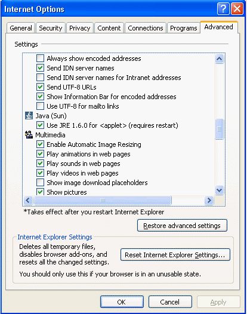

| Documentation Contents |
This section covers the following topics:
Developers should be aware that end users of Java Plug-in can choose to enable or disable APPLET tag support during installation or at any time after installation.
As part of the installation process, the user will see the following panel:
This panel allows the user to select JRE/Java Plug-in to be the default runtime environment for handling APPLET tags in Microsoft Internet Explorer browsers and/or Mozilla family browsers. The installer will use the Windows registry to determine whether the user's machine has these browsers installed and will check by default the box corresponding to any installed browser(s).
The user can enable or disable APPLET tag support after installation through the Browser panel of the Java Plug-in Control Panel.
On Microsoft Internet Explorer, users also can use the Advanced tab in the Internet Options window to enable/disable Java Plug-in's APPLET tag support. (Tools>Internet Options > Advanced tab.)

Java Plug-in supports silent installation as an alternative to the standard installation wizard. Silent installation might be used, for example, for large-scale deployment. For general information on silent installation of Java Plug-in, see Silent Installation.
Unlike the installation using the wizard, silent installation will not enable APPLET tag support by default for any browsers on the end user's machine. To enable APPLET tag support during silent installation, you must use one or both of the following command-line options:
IEXPLORER=1
- If this flag is passed to the installer, APPLET tag support will be enabled for Microsoft Internet Explorer browsers.
MOZILLA=1If this flag is passed to the installer, APPLET tag support will be enabled for Mozilla family browsers.
Copyright © 1993, 2011, Oracle and/or its affiliates. All rights reserved. Please send comments using this Feedback page. |
Java Technology |